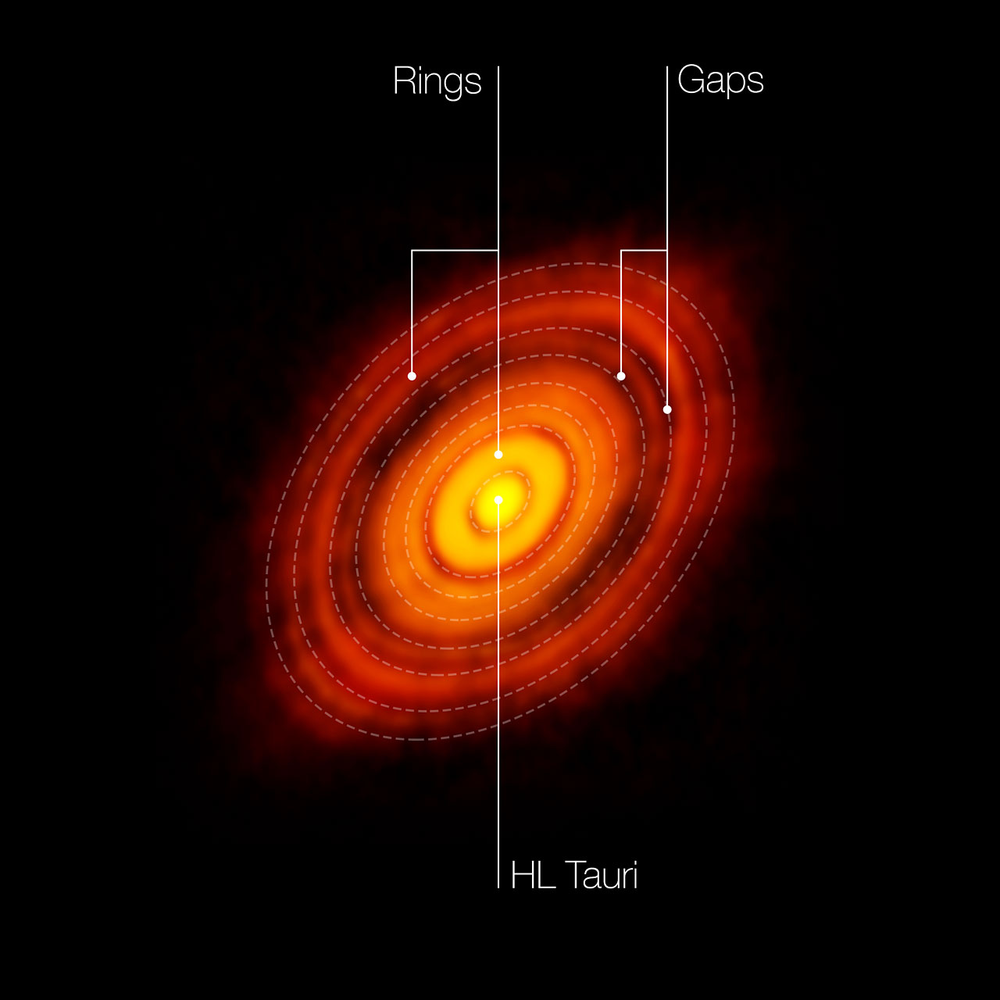
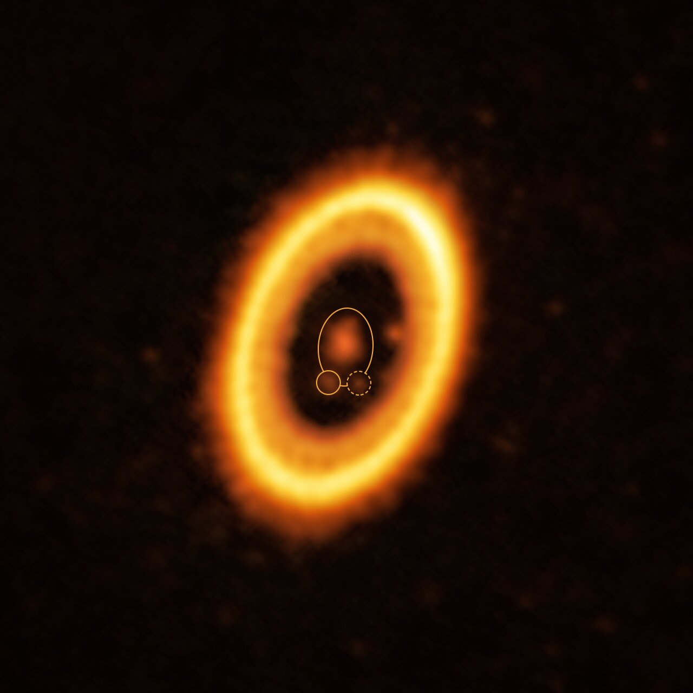
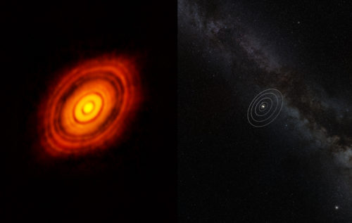
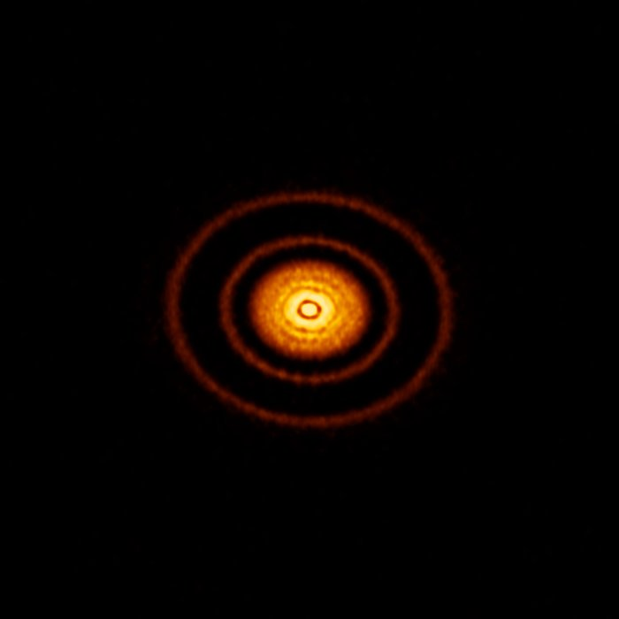
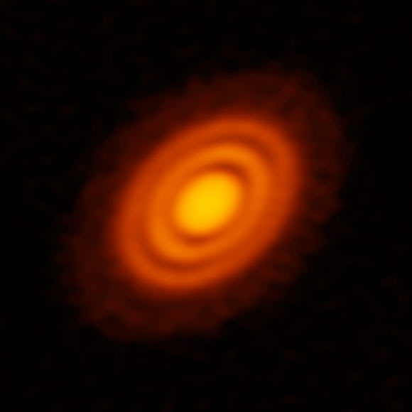
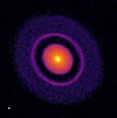
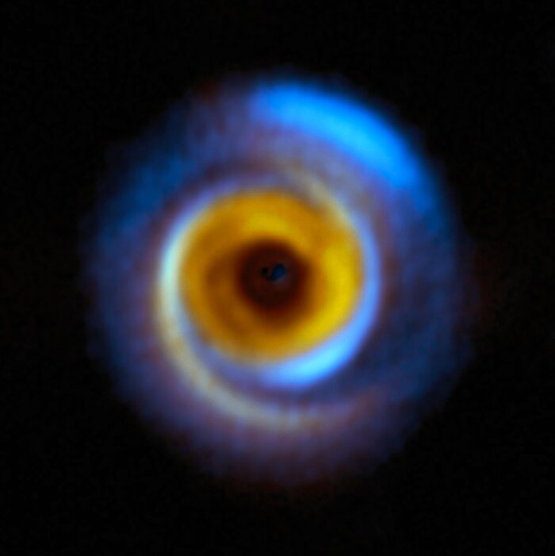
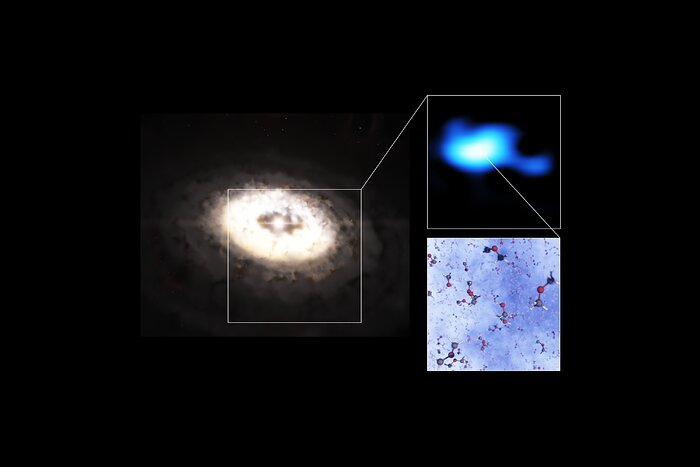

Pilot Protoplanetary Disk Catalog
This Pilot Protoplanetary Disk Catalog is an educational and scientific resource designed to explore the physical properties, morphologies, and evolutionary processes of protoplanetary disks.
The goal of this catalog is to organize observational and theoretical knowledge about young circumstellar disks using results from the scientific literature. Each disk entry summarizes its stellar properties, disk morphology, and observational signatures that may be related to planet formation.
The catalog focuses particularly on disk substructures, such as rings, gaps, spirals, and asymmetries, which have become central observational features in modern studies of planet-forming disks.
What is a protoplanetary disk?
A protoplanetary disk is a rotating structure of gas and dust that surrounds a young star during the early stages of stellar evolution. These disks form naturally during star formation, when the gravitational collapse of a molecular cloud core produces a protostar while conserving angular momentum. As a consequence, part of the infalling material settles into a flattened rotating disk.
As described by Armitage (2011):
“They can be defined as rotationally supported structures of gas (invariably containing dust) that surround young, normally pre-main-sequence stars.” (Armitage, 2011, p. 196)
These disks contain the raw material from which planetary systems form. Gas dominates the mass budget of the disk, while solid particles — dust grains and larger aggregates — represent a smaller fraction but play a fundamental role in planet formation.
Protoplanetary disks are also relatively short-lived structures in astronomical terms. Observations indicate that:
“Around low-mass stars, protoplanetary disks are persistent; the typical lifetime of ∼10⁶ years (Haisch, Lada & Lada 2001) equates to thousands of dynamical times at 100 AU.” (Armitage, 2011, p. 196)
This limited lifetime sets the time window during which planets must form before the gas disperses.
From a physical perspective, the most important property of a disk is how its mass is distributed. As emphasized in observational studies of disks:
“The spatial distribution of mass—the density structure—is without question the fundamental property of interest for disks.” (Andrews, 2020)
Understanding this density structure is essential because it determines the disk’s temperature, dynamics, and the processes that control planet formation.
Available disks

Annotated ALMA image of the protoplanetary disk surrounding the young star HL Tau. The ring–gap structure visible in the dust emission traces variations in the distribution of solid material.
Credit: ALMA (ESO/NAOJ/NRAO).
HL Tau
A young protoplanetary disk well known for its concentric rings and gaps revealed by ALMA.

ALMA image of the protoplanetary disk around AS 209 showing multiple narrow rings and gaps that may indicate ongoing planet formation.
Credit: ALMA (ESO/NAOJ/NRAO); A. Sierra (U. Chile).
AS 209
A protoplanetary disk observed with ALMA that shows multiple narrow rings and gaps, often interpreted as signatures of planet formation.

Composite ALMA image of the protoplanetary disk around HD 163296. The red component traces dust, while the blue emission shows carbon monoxide gas; deficits in the outer disk suggest the presence of forming planets.
Credit: ALMA (ESO/NAOJ/NRAO); A. Isella; B. Saxton (NRAO/AUI/NSF).
HD 163296
A structured protoplanetary disk where dust and gas observations suggest the presence of forming planets embedded in the outer disk.

High-resolution SPHERE image of the dusty disk around the young star IM Lupi, revealing fine structures in scattered light.
Credit: ESO/H. Avenhaus et al./DARTT-S collaboration.
IM Lup
A large and extended protoplanetary disk observed in scattered light, showing detailed dust structures in its outer regions.

ALMA image of the young planetary system PDS 70, showing a circumstellar disk where planets are forming. The system hosts the confirmed planets PDS 70b and PDS 70c within the disk cavity.
Credit: ALMA (ESO/NAOJ/NRAO) / Balsalobre-Ruza et al.
PDS 70
A young planetary system famous for hosting directly detected forming planets embedded within its protoplanetary disk.
Comparative catalog summary
The following table is generated automatically from the structured catalog files in data/disks_master.csv. This allows the catalog to remain reproducible and scalable as new disks and properties are added.
Catalog summary
| Disk | Distance (pc) | Stellar mass (M☉) | Spectral type | Morphology | Planet evidence |
|---|---|---|---|---|---|
| AS 209 | 126 | 0.9 | K5 | ringed disk with coordinated dust and gas substructures | yes |
| HD 163296 | 101 | 2.3 | A1Ve | ringed disk with prominent dust gaps and gas velocity perturbations | yes |
| HL Tau | 140 | 1.5 | K5 | ringed disk with multiple bright rings and dark gaps | yes |
| IM Lup | 161 | 1.0 | M0 | massive flared disk with compact millimeter dust disk, extended gas disk, and tentative ring-like substructure | indirect |
Images of protoplanetary disks
Below are examples of protoplanetary disks observed at high angular resolution. These observations reveal a wide diversity of disk morphologies and structures.

Credit: ALMA (ESO/NAOJ/NRAO), NASA/ESA.

Credit: ALMA (ESO/NAOJ/NRAO), S. Andrews et al.; NRAO/AUI/NSF, S. Dagnello.

Credit: ALMA (ESO/NAOJ/NRAO), AUI/NSF, A. Isella, B. Saxton.
Credit: ESO/H. Avenhaus et al./DARTT-S collaboration.
(Additional images of other disks in the pilot catalog will be included here.)
These observations, particularly those obtained with ALMA, have revealed that disks frequently contain complex structures rather than smooth distributions of gas and dust.
Physical processes shaping protoplanetary disks
The structure and evolution of protoplanetary disks are governed by several fundamental physical processes.
Disk accretion and angular momentum transport
Gas in a disk orbits the central star approximately in Keplerian rotation. However, for material to accrete onto the star, it must lose angular momentum. This redistribution of angular momentum drives disk evolution.
Disk dynamics therefore play a central role in shaping disk structure. As Andrews (2020) notes:
“Disks are profoundly affected by their fluid dynamics.” (Andrews, 2020)
Theoretical models describe this evolution using the framework of thin accretion disks, where the vertical thickness of the disk is small compared with its radius. In fact:
“Protoplanetary disks are observed to be geometrically thin, in the sense that the vertical scale height (h r), and they typically have inferred masses (M_{disk} M_*). These properties imply that models of disk evolution should be grounded within the theory of thin accretion disks.” (Armitage, 2011)
Angular momentum transport may occur through several mechanisms, including turbulence, magnetic processes, and disk winds.
Gravitational instability
In sufficiently massive and cold disks, self-gravity can become important. In this regime, gravitational instabilities can generate spiral density patterns that redistribute mass and angular momentum within the disk.
These spiral structures may also concentrate solid particles and potentially contribute to the formation of planetesimals.
Physical processes diagram
Buscar diagramas o gráficos sobre:
- gas accretion toward the star
- outward angular momentum transport
- spiral structures from gravitational instability
- pressure traps concentrating dust
- planet–disk interactions
Such diagrams help illustrate how multiple physical processes interact to shape disk evolution.
Substructures in protoplanetary disks
High-resolution observations have revealed that protoplanetary disks frequently contain substructures, meaning localized variations in the distribution of gas or dust.
These structures include rings, gaps, spirals, and asymmetric features. Their discovery has significantly reshaped our understanding of disk evolution and planet formation.
Substructures are particularly important because they can create local pressure maxima that trap drifting particles. In smooth disks, solid particles tend to migrate inward rapidly due to aerodynamic drag from the gas. However, pressure maxima can halt this inward drift and concentrate particles, potentially enabling the formation of planetesimals.
Common substructure morphologies
Observations have identified several common classes of disk substructures.
Rings
These systems display a central cavity surrounded by a bright ring of dust emission. This morphology is typical of transition disks.
Gaps
This is the most common substructure pattern observed in millimeter continuum images. It consists of concentric bright rings separated by darker gaps.
Arcs
Some disks show asymmetric arc-shaped structures, which may correspond to vortices or local dust concentrations.
Spirals
Large-scale spiral patterns can arise from gravitational instability or perturbations produced by massive companions or forming planets.
Images of disk substructures

Credit: ALMA (ESO/NAOJ/NRAO), S. Andrews et al.; N. Lira.

Credit: ESO/A. Garufi et al.; R. Dong et al.; ALMA (ESO/NAOJ/NRAO).

Credit: ESO/L. Calçada; ALMA (ESO/NAOJ/NRAO); A. Pohl; van der Marel et al.; Brunken et al.
These images illustrate how disk structures can vary significantly between systems and may provide clues about the processes occurring within them.
References
Armitage, P. J. (2011). Dynamics of Protoplanetary Disks. Annual Review of Astronomy and Astrophysics.
Andrews, S. M. (2020). Observations of Protoplanetary Disk Structures. Annual Review of Astronomy and Astrophysics.